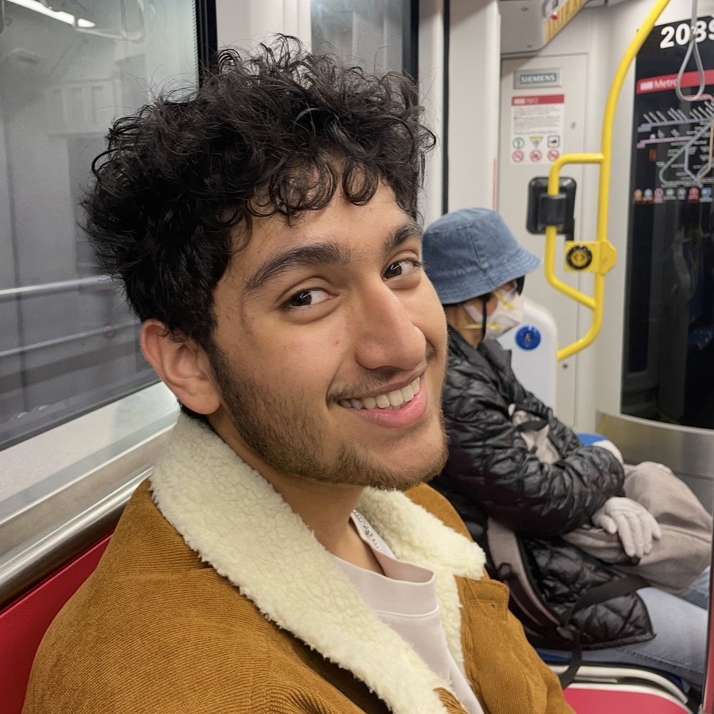
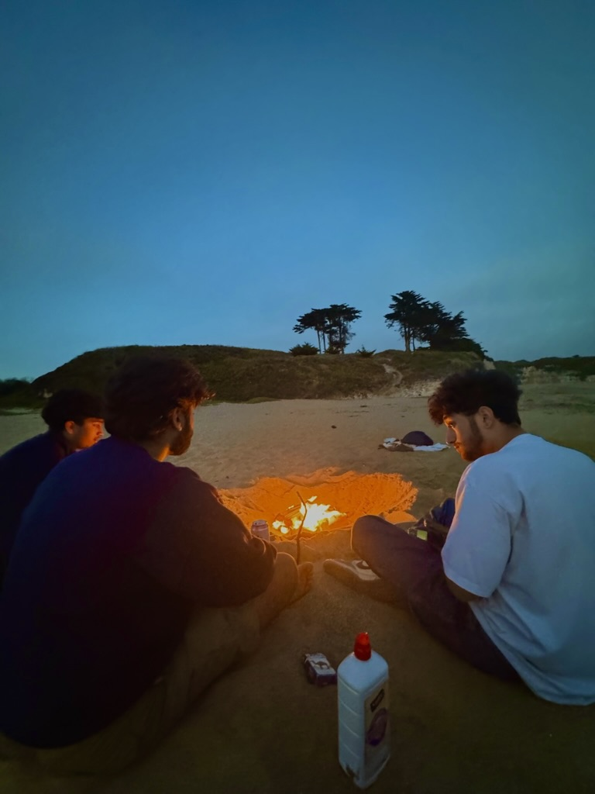
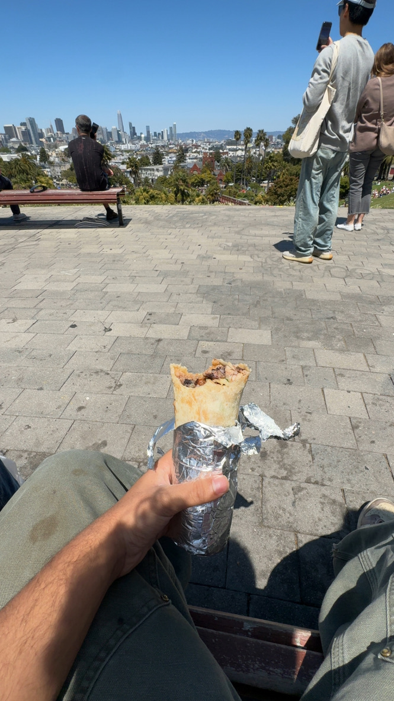

Supply Chain Management
Logistics, distribution, and the physical systems that decide whether flow feels smooth or fragile.
Bay Area raised, recently graduated from Indiana University's Kelley School of Business. I prototype AI-assisted products and work on operational problems, but most of my curiosity starts lower to the ground. I like cities, transit, restaurant geography, and the everyday systems that decide whether a day feels smooth or needlessly difficult.
Study and focus
Kelley School of Business
As a recent graduate, I'm especially proud to say that Kelley is one of the strongest undergraduate business schools in the country. The undergraduate program is ranked No. 8 in the U.S., offering more than 20 different majors and co-majors, and more than 1,450 companies hired Kelley students for internships and full-time roles in the last year.
Several individual programs sit even higher in the national rankings, including Accounting, Entrepreneurship, Management, and Production & Operations Management, and the school's Integrated Core (I-Core) is widely regarded as one of the most demanding and formative semesters in undergraduate business education.
What made it good for me was how close everything stayed to real work. The school gave me formal grounding in operations, analytics, and finance, but it also kept pushing all of that toward recruiting, workshops, student organizations, and actual decisions about the kind of work I wanted to be near.
Logistics, distribution, and the physical systems that decide whether flow feels smooth or fragile.
Predictive analysis, modeling, and decision support for environments where numbers have to change real choices.
Institutions, urban systems, and the public-facing structures people move through every day.
AI products, operational tooling, and city-scale questions about trust, friction, and everyday usability.

Kelley gave me the formal side of operations, analytics, and finance, but a lot of what I actually care about never actually lived inside the classroom. I kept getting pulled toward the systems people really have to move through and the point where something either helps or quietly gets in the way.
That showed up everywhere. In warehouse work, it looked like flow and damage risk. In finance, it looked like whether a system actually helped someone stay oriented. In transit and city life, it looked like whether movement felt intuitive or weirdly heavy for no good reason.
So this section is partly about what I studied, but also about the way I learned to look at the world. The majors matter. The lens matters more, and honestly that is the part I am taking with me.
Selected projects
The projects that feel most representative to me usually begin with a point of friction and end with something people can move through more clearly.
Sparse Halo started as a multi-agent AI project, but it grew into a small private product family with a direct chat mode, a structured Cabinet mode, and a separate SAT Prep lane. What kept it interesting for me was figuring out where a structured AI workflow was actually useful, when one model was enough, when a task needed debate or grounding, and how to package that into something a real person could use. A lot of the work was really about reducing friction and making the system legible, from temporary-by-default sessions and access gating to source panels, file attachments, and shareable artifacts.
TJX was one of the first places where I got to work on a problem that felt analytical and operational at the same time. I was building a Python pre-routing tool around outbound damage risk in a high-volume warehouse, but the part that stayed with me was the pace. It was a setting where decisions had to be smart, quick, and scalable. I used Power BI and live BlueYonder data to show where risk was building across doors, lanes, and time windows, then turn that into something supervisors and leadership could act on before problems spread.
Honestly, ever since Perplexity locked pro plans out of the "Agent Council" feature, I've been especially fascinated with just how important multi-agent AI really was. That research was the both the foundation and the purpose for which I built Sparse Halo, and its Cabinet mode. I wrote a short research series on when debate helps, when it just adds cost, and how synthesis plus anti-sycophancy signals should shape the system.
What started as a fix for context loss turned into a private memory operating system for AI collaboration. Inspired in part by Andrej Karpathy’s recent LLM wiki direction, I built myself a selective Obsidian Brain that knows everything about me, my preferences, my writing style, exactly how I think, and much more. At its core, it is a Graph RAG project: linked notes, retrieval rules, and an archive bridge let models plugged into the vault work against a living continuity substrate instead of having to start with amnesia. Actually, that brain was used to shape, build, and write this website!
I am building Koaryu because independent martial arts studios seem stuck between spreadsheets and overpriced legacy software. It is still an early-stage project, and that is exactly why I am excited about it. I am shaping it into a purpose-built operating system for student management, belt progression, scheduling, leads, billing, and retention, and using it to test what better software can feel like inside a very specific niche business. To me, the future applications are what make it compelling: it is a live experiment in whether thoughtful vertical SaaS can improve day-to-day operations where generic tools usually fall short.
Working with B-Top Advocacy and Bloomington Transit gave me a more concrete way to think about cities. The work supported Bloomington Transit’s five- to seven-year planning and sharpened my interest in how transportation investment can improve daily life, strengthen communities, and shape the development of a place over time. It remains one of the clearest bridges between my public-systems interest and my business training.
Professional experience
The job history is broad on paper, but the pattern is pretty consistent.
Most of my actual work experience has sat close to operations, coordination, and day-to-day problem solving. Sometimes that has looked like a warehouse, sometimes finance-process cleanup, and sometimes direct teaching plus small-team responsibility.
The common thread is that I tend to do well in roles where trust matters, the system is tangible, and better judgment can leave the work in better shape by the end of the day.
I worked inside a high-volume distribution environment where the work was fast, physical, and visible. My lane focused on outbound flow risk, especially where routing, damage, rework, and fluctuating volume started to compound.
This role gave me early exposure to operational finance that was more hands-on than people usually expect from a first internship. I worked directly with customers and vendors, cleaned up receivables backlog, and helped keep the billing side of the system legible.
This was my first paying job and still one of the clearest foundations for how I work with people. Because I was often teaching students who were older than me and sometimes higher ranked than me, I learned early that leadership depends on trust in your example and your instruction. Title alone was never enough.
Tools and systems
These are the tools I actually use, not a keyword cloud.
A lot of my work sits at the overlap of operations, analytics, AI product building, and finance systems, so the stack is a little broader than a normal one-lane technical profile. These are the tools I am genuinely comfortable working in and the ones that keep showing up in real projects.
The through-line is pretty consistent. I like tools that help make a live system more legible, whether that system is a warehouse, a finance workflow, an AI product, or my own research and memory infrastructure.
This is the oldest and most stable part of the stack. I am comfortable using data tools to surface what matters, build clear reporting, and turn noisy process information into something another person can actually act on.
I have spent real time inside the software layers that support finance and distribution work. What matters most to me here is whether the system helps teams stay oriented and move cleanly.
Sparse Halo pushed me into a much more complete product stack than anything I had done before. The point for me is being able to ship real things, understand how the pieces fit together, and make useful product decisions across the stack.
This is the part of the stack that ties the rest together. I use software to analyze, build, preserve context, organize work, and reduce repeated setup costs across projects and daily life.
Personal history
I grew up in the Bay Area, and moving from Sunnyvale to Cupertino to San Ramon really solidified that itself as my home more than any individual city. The Bay has always felt like a single place to me, even as the textures of that place shifted around me. I have so many memories from so many parts of the Bay, but from The Tenderloin to Santana Row, somehow it's all always felt like home to me.
That is still what I love about it. The Bay can hold a lot of different textures at once, and it rewards curiosity. You can move from a quiet neighborhood to a crowded city block to an open stretch of coast in the same day and still feel like you are inside one coherent place.
My family is Bengali, and both of my parents are from Kolkata in West Bengal. Growing up in California with that background gave me a layered sense of home. Food, family, community, and place were always tied together, and that still shapes the way I think about belonging.
College took me to Bloomington for an important chapter, and that distance taught me so many lessons about myself I never could have learned back home. Long term, I still see myself building a life on the West Coast, close to the kinds of cities, coastlines, and everyday rhythms that have always felt most natural to me.

Operating belief
The best system earns trust by disappearing.
The idea I come back to most is friction. If a tool, process, or institution keeps asking people to stop, translate, troubleshoot, or second-guess themselves, something is probably wrong. I care about the point where a system stops supporting life and starts asking to be managed.
That belief reaches beyond software. I notice it in transit and paperwork and warehouse flow, and in the way a city either carries you through the day or makes every simple errand feel heavier than it should. A lot of what gets framed as a discipline problem is really an environment problem.
It also explains the work I keep choosing. TJX and Sparse Halo look nothing alike on paper, but both became interesting to me for the same reason. I wanted to find the extra steps, the ambiguity, or the repeated cleanup, then turn that mess into something a real person could move through with less resistance. The same instinct is part of why finance-process cleanup has felt meaningful to me too.
That is the through-line for me. I like tools and teams and places that feel considered enough to let you stay inside your own life instead of fighting the mechanics around it. When something works well, it gives your attention back.

Curiosity lane
A few questions I keep circling, whether I am building something, reading around it, or just trying to understand why certain systems feel calmer and more trustworthy than others.
I keep coming back to the line between useful deliberation and expensive theater. A lot of multi-agent design sounds impressive before it becomes practical, so I am interested in where synthesis, routing, and critique earn their keep.
This question sits underneath Cabinet, the research series, and most of my skepticism about AI product theater.
The answer is rarely just speed. I am more interested in the point where a person stops bracing for confusion, cleanup, or second-guessing and starts trusting the system to carry some weight for them.
It is the same instinct behind the friction section above and a lot of the operational work I like most.
Transit and walkability are interesting to me because they change more than travel time. They change density, land value, business conditions, and the feel of a place, which is another way of saying they change daily life itself.
That is why the transit research still matters to me. It feels like a real bridge between policy, business, and lived experience.
Personal finance, investing, and financial services are all genuinely important to me. I am especially drawn to tools that help someone stay oriented without turning attention into a full-time job, which is part of why I keep coming back to calmer monitoring, political-trade signals, and decision support that feels useful instead of noisy.
It is also part of why I keep coming back to portfolio-support tools and broader financial-services questions even when I have paused some of the builds for cost or complexity.
Direction
The pull is less toward one title than toward a certain kind of work.
What tends to hold my attention is work where analysis stays close to people, process, constraints, and real decisions. That can show up in more than one form.
One end of the range looks like AI operations, internal tooling, or workflow acceleration. Another looks like warehouse leadership, supply chain execution, planning, allocation, financial services, or other work where people, process, and decisions all touch the same system.
AI operations and workflow improvement
Internal tools, automation, and business systems
Supply chain, warehouse operations, and operational leadership
Planning, allocation, financial services, finance systems, and analyst work tied to execution
Teams that invest in early talent and give real responsibility
Cross-functional environments where communication matters as much as analysis
Places with enough ambiguity to build judgment and real ownership
Work that produces concrete proof and visible results
I care about systems that affect real people and real decisions.
I want work that is structured enough to learn from and alive enough to shape.
If the work helps make something clearer, calmer, faster, or more trustworthy, I am usually interested.
The title can vary a lot as long as that underlying shape is still there.
That is why the range stays wide even when I am not actively searching. I can genuinely imagine myself in AI operations on one side, financial-services or investing-adjacent work in another lane, and warehouse or supply chain leadership on the other, because all of them still come back to understanding a live system, earning trust inside it, and improving how it runs.
Working style
The through-line in my work is less about one title than one work shape.
I do my best work around real systems with real users, whether that means a warehouse floor, an internal workflow, or a tool that helps someone think more clearly. I like work that is practical enough to matter and open enough to be shaped.
That usually means some combination of rapport, analysis, messy operations, and enough ownership to leave the system in better condition than I found it.
Rapport matters to me, especially in frontline or operational settings.
I like staying close to the people doing the work rather than managing from a distance.
The best teams feel capable, self-aware, and human at the same time.
I do my best work when the problem starts messy and nobody has fully imposed structure yet.
I like ambiguity when it comes with ownership, a deadline, and room to build an intervention.
I would rather improve a system than spend every day only watching a KPI.
A lot of my value comes from turning messy information into something other people can actually use.
I care about reporting, tools, and explanations that help people move instead of freezing them in extra detail.
The technical side matters to me most when it sharpens judgment rather than becoming its own performance.
I want to work close to the point where analysis changes a real choice.
Planning, operations, AI tooling, supply chain, and finance systems all fit that pattern for me.
The common thread is practical responsibility and work that is legible in the real world.
Reach out
If the work feels relevant, I’d be glad to talk.
Email is the best way to reach me. If there is a role, project, or conversation that feels like a fit, just send me a note.
LinkedIn works too if that is easier.